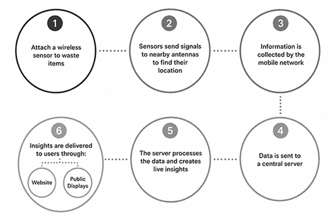

Trash Track
Year
2009
Format
Smart Tags & Visualizations
Intended Audience
Seattle Residents, policymakers, and the general public
Ontological Analysis

Historical and Contextual Analysis
The Trash Track project emerged during a period of growing concern about sustainability and waste management in the late 2000s. In 2008, New York City launched the Green NYC Initiative (PlaNYC), a sustainability plan that aimed to increase recycling rates and reduce greenhouse gas emissions. This initiative inspired the team at the MIT SENSEable City Lab to explore how sensors and mobile technologies could change the way cities are understood and managed. They were driven by a simple but powerful question: “Why do we know so much about the supply chain, and so little about the removal chain?”
Trash Track was developed in response to rising levels of municipal waste, declining recycling rates, and the growing problem of electronic waste, which became a major environmental concern in the early 2000s. E-waste contains toxic materials such as lead, mercury, and cadmium that often end up in landfills, creating long-term environmental impacts. Interestingly, the data for the project was collected in the greater Seattle area in 2009. Although Seattle was still emerging as Silicon Valley of the Pacific Northwest, the decade saw the city become one of the nation's largest technology hubs. It is interesting that a conversation about e-waste and recycling began in a city whose rapid technological growth would also contribute to the increasing production of electronic waste. By attaching tracking sensors to everyday objects, the project made the otherwise invisible journey of waste visible, revealing how discarded items moved through cities and where they ultimately ended up. The launch of Trash Track in 2009 became one of the first large-scale applications of active location tracking technology for municipal solid waste.
Rather than simply documenting waste, Trash Track questioned how people understand their relationship with the things they throw away. It was designed for both policymakers and the general public, encouraging a bottom-up approach to resource management by using technology to influence behavior and improve environmental awareness. The project emphasized that the things we throw away do not simply disappear. Instead, they travel through complex waste networks and leave environmental footprints along the way. It also highlighted the technological footprint of e-waste, connecting waste management to broader conversations about technology, consumption, and sustainability.
Visual and Aesthetic Representation

One of the main outputs of the Trash Track project is its visual representation through mapping. The maps are drawn very intentionally, highlighting only the movement and journey of the tracked trash instead of detailed geographic information. Different types of waste are represented in bright colors against a dark, almost black-and-white background. This contrast emphasizes that trash, which we often think disappears once it is thrown away, actually continues to travel far beyond what we expect. By simplifying the map and focusing only on the paths of the waste, the project makes these otherwise invisible systems visible to the public.
Beyond digital maps, Trash Track also communicates its findings through public exhibitions. Originally developed in Seattle, the project has since been exhibited in other metropolitan cities such as New York, London, and Taiwan, allowing its message to reach audiences in different urban contexts. The exhibition format reinforces the project's goal of making invisible infrastructure visible by transforming scientific data into an engaging public experience. Rather than presenting statistics alone, visitors are immersed in visual narratives that reveal how waste moves through cities and across regions.
Overall, the project's visual language is central to its argument. The bold colors, minimal backgrounds, and emphasis on movement encourage viewers to reconsider what happens after they throw something away. Instead of portraying waste as the end of a product's life, the visualizations reveal it as the beginning of another journey. This representational approach not only raises public awareness about recycling and waste management but also encourages conversations around more sustainable policies and individual responsibility.
Author Bibliography
External Bibliography